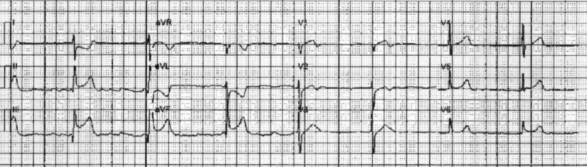
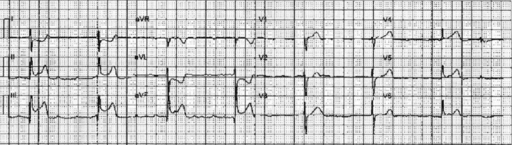
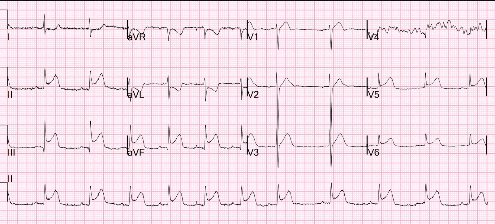
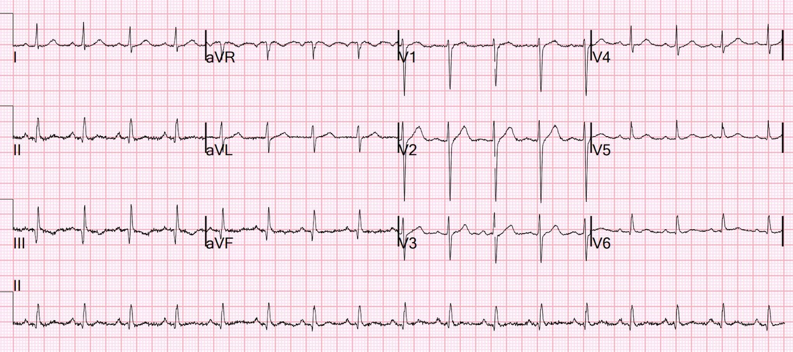
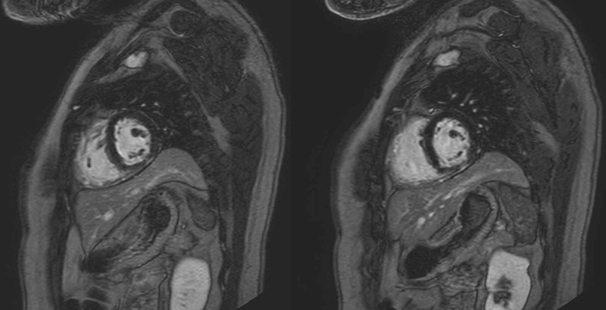
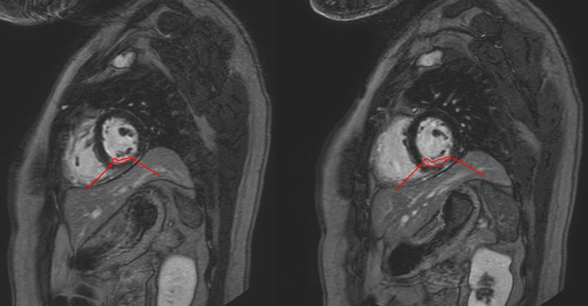
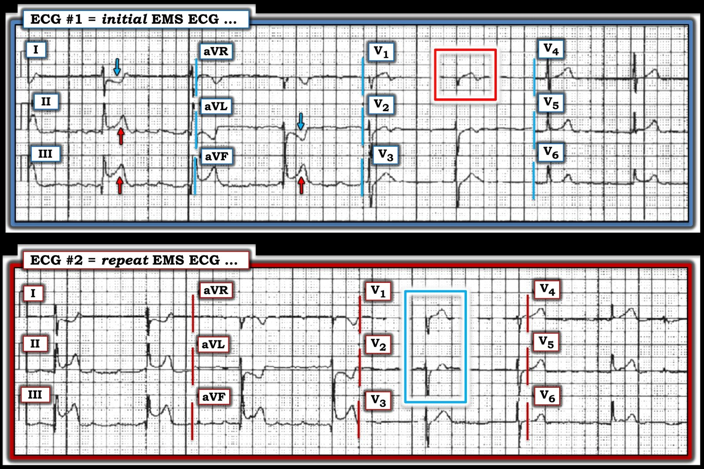

13/04/2025 — Đau ngực và điện tâm đồ này. Chụp mạch vành hoàn toàn bình thường. Đây có phải là viêm cơ tim?
Bản dịch tiếng Việt của bài "Chest pain and this ECG. Angiogram totally normal. Is this myocarditis?" – Dr. Smith’s ECG Blog. Giữ nguyên toàn bộ 9 hình ảnh của bản gốc.
Một người đàn ông ngoài 30 tuổi đang đi bộ thì xuất hiện đau ngực vùng giữa, không lan, sau đó có một cơn ngất kèm đại tiện không tự chủ, và khi tỉnh lại thì vẫn còn đau ngực. Bệnh nhân cho biết chưa từng có triệu chứng như thế này trước đây, cơn đau dữ dội đến mức gây khó thở.
Bệnh nhân gọi 911. Nhân viên cấp cứu ngoài viện ghi nhận huyết áp 79/52 và mạch 47.
Họ đã ghi được điện tâm đồ này:


STEMI/OMI thành dưới rõ ràng
Còn gì nữa?
Còn có ST chênh lên ở V1, là dấu hiệu chẩn đoán OMI thất phải trong bối cảnh này, và góp phần giải thích tình trạng ngất và tụt huyết áp (cùng với nhịp chậm).
Nhân viên cấp cứu ngoài viện ghi thêm điện tâm đồ thứ hai:


Giờ đây V1 còn nổi bật hơn nữa
Vậy đây là một OMI do RCA đoạn gần (proximal RCA) rõ ràng, với OMI thành dưới và OMI thất phải.
Nhân viên cấp cứu ngoài viện đã kích hoạt phòng thông tim (cath lab).
Bệnh nhân đến khoa cấp cứu (ED) và được ghi điện tâm đồ này:


Kết quả troponin I độ nhạy cao đầu tiên không phát hiện được (＜3 ng/L).
Chụp mạch vành bình thường
Điện tâm đồ sau chụp mạch vành ở đây:


Mọi bằng chứng của OMI đã biến mất.
Siêu âm tim chính thức bình thường.
Tôi được báo về ca này vào ngày hôm sau và đã tìm các kết quả troponin.
Troponin duy nhất được đo là lần đầu tiên.
Tôi yêu cầu đo thêm một lần nữa, và kết quả là 49,000 ng/L
Khi đó nhóm điều trị cho rằng đây là viêm cơ tim.
Tại sao đây không thể nào là viêm cơ tim?
Vì tình trạng viêm không biến mất trong vòng 2 giờ, và do đó điện tâm đồ sẽ không trở về bình thường như điện tâm đồ này.
Bệnh nhân được chụp MRI và kết quả cho thấy nhồi máu cơ tim xuyên thành vùng dưới.


Đây là hình có chú thích bằng màu đỏ:


Bác sĩ chẩn đoán hình ảnh cực kỳ giỏi của chúng tôi, Gopal Punjabi, khẳng định với tôi rằng dấu hiệu này chỉ có thể do nhồi máu cơ tim, không phải do viêm cơ tim.
Bệnh nhân được phát hiện có nguồn gây thuyên tắc. Thực tế còn thú vị hơn thế, nhưng vì lý do bảo mật thông tin, tôi không thể cung cấp thêm chi tiết.
Vậy đây là “MINOCA”. Nhồi máu cơ tim với động mạch vành không tắc nghẽn (Myocardial Infarction with Non-Obstructive Coronary Arteries).
Căn nguyên (danh sách chưa đầy đủ):
Co thắt mạch vành. Nghiệm pháp kích thích rất hữu ích để chẩn đoán tình trạng này
Huyết khối mạch vành đã ly giải (phải chụp cắt lớp quang học (OCT) hoặc ít nhất là siêu âm trong lòng mạch (IVUS) mới tìm được những mảng xơ vữa không gây tắc nghẽn đã bị nứt vỡ này.
Thuyên tắc đã ly giải. Cần tìm nguồn gây thuyên tắc. Cục thuyên tắc thường không tự ly giải và cần được can thiệp.
Rối loạn chức năng vi mạch vành
Bóc tách động mạch vành
Đọc thêm về MINOCA và các căn nguyên của nó tại đây:
https://www.frontiersin.org/journals/cardiovascular-medicine/articles/10.3389/fcvm.2022.1032436/full (bài tổng quan về MINOCA và các căn nguyên trên tạp chí Frontiers in Cardiovascular Medicine)

===================================
BÌNH LUẬN CỦA TÔI, bởi KEN GRAUER, MD (13/4/2025):
===================================
Ca hôm nay nêu lên một số điểm quan trọng liên quan đến thực thể được gọi là “MINOCA” ( = MI with Non-Obstructive Coronary Arteries – nhồi máu cơ tim với động mạch vành không tắc nghẽn).
- Như tôi đã viết trong Bình luận của tôi ở bài đăng ngày 16 tháng Mười Một năm 2023 trên Dr. Smith’s ECG Blog — “Tôi ngờ rằng thực thể được gọi là MINOCA chưa được nhiều bác sĩ lâm sàng nhận thức đầy đủ.” Tôi ngờ rằng nhận định này vẫn còn đúng sau 2 năm, vào năm 2025.
Như tôi đã viết trong phần Bình luận ngày 16 tháng Mười Một năm 2023 đó:
- Theo ước tính, 5-15% bệnh nhân (tùy theo quần thể nghiên cứu) được chẩn đoán hoặc STEMI hoặc NSTEMI — hóa ra lại là MINOCA, trong đó thông tim không phát hiện được động mạch liên quan đến nhồi máu nào (tức là không có mạch “thủ phạm” hẹp ít nhất 50%) — và không tìm thấy căn nguyên toàn thân rõ ràng nào giải thích lý do bệnh nhân đến bệnh viện (Tamis-Holland và cs.: Tuyên bố khoa học của AHA về MINOCA — Circulation 139:e891-e908, 2019 — Broncano và cs. — RadioGraphics 41:8-31, 2021 — và — Sykes và cs. — Interventional Card Review 16:e10, 2021).
- Do MINOCA phổ biến đến mức đáng ngạc nhiên — Chúng ta cần biết về thực thể này nếu muốn điều trị tối ưu cho nhóm bệnh nhân MINOCA đông đảo đến bất ngờ.
Chẩn đoán MINOCA như thế nào?
Câu trả lời cho câu hỏi này rất đơn giản:
- Có bằng chứng cho thấy đã xảy ra một OMI cấp hay không?
- Nếu có — Thông tim được thực hiện kịp thời có “âm tính” về mặt xác nhận nhồi máu cấp hay không? Nếu có — thì bệnh nhân bị MINOCA.
Về CA BỆNH hôm nay:
- Bệnh sử trong ca hôm nay gợi ý mạnh mẽ một biến cố tim cấp: Bệnh nhân bị đau ngực khởi phát đột ngột, dữ dội và kéo dài.
- Troponin ban đầu âm tính. NHƯNG — như chúng tôi vẫn thường nhấn mạnh, troponin ban đầu có thể âm tính ở một tỷ lệ đáng kể các trường hợp nhồi máu cơ tim cấp! Kết quả troponin lặp lại do Dr. Smith yêu cầu đã xóa bỏ mọi nghi ngờ về việc có nhồi máu cấp hay không (tức là vì troponin lặp lại = 49,000 ng/L).
- Mặc dù 2 điện tâm đồ của đội cấp cứu ngoài viện (EMS) có độ phân giải kém — chẩn đoán OMI cấp do RCA được xác lập ngay từ các điện tâm đồ EMS này cho đến khi chứng minh được điều ngược lại.
- Kết quả thông tim là “bình thường”.
- Kết luận không thể nhầm lẫn: Theo định nghĩa tôi đã đề xuất ở trên — bệnh nhân hôm nay biểu hiện MINOCA.
Các điện tâm đồ EMS:
Như Dr. Smith đã nêu — chẩn đoán STEMI thành dưới cấp là rõ ràng dựa trên bệnh sử đau ngực mới xuất hiện, dữ dội ở một bệnh nhân có điện tâm đồ EMS đầu tiên mà tôi trình bày dưới đây (bản ghi PHÍA TRÊN trong Hình 1).
- Thay vì cố “làm đẹp” các điện tâm đồ EMS hôm nay bằng PMcardio — tôi quyết định giữ nguyên bản gốc, dù có làm nhạt bớt “nhiễu” nền.
- Tôi không chắc chắn về nhịp trong cả hai bản ghi EMS, ngoài việc có thể nói rằng đây là nhịp trên thất (QRS hẹp) — vừa chậm vừa ít nhất là khá đều (tần số <50/phút). Tôi đơn giản là không thể nhận ra hoạt động nhĩ một cách đáng tin cậy. Dù vậy — chỉ cần nhận biết rằng nhịp trong 2 bản ghi này khá đều và có nguồn gốc trên thất là đủ để xác định dấu hiệu MẤU CHỐT (như ở gạch đầu dòng tiếp theo dưới đây).
- ST chênh lên rõ ở mỗi chuyển đạo thành dưới — đi kèm ST chênh xuống soi gương ở aVL và I — xác định bản ghi này là STEMI thành dưới.
- Tắc RCA cấp được gợi ý mạnh bởi ST chênh lên ở chuyển đạo III>II, và ST chênh xuống soi gương rõ ở aVL. Trong bối cảnh này (như Dr. Smith đã nêu) — hình ảnh đoạn ST thẳng đuỗn bất thường, chênh lên và phần cuối sóng T đảo ngược ở chuyển đạo V1 trong bối cảnh OMI cấp do RCA (trong hình chữ nhật MÀU ĐỎ) — xác định tổn thương thất phải cấp (và cho chúng ta biết rằng chính RCA đoạn gần đang bị tắc vào thời điểm điện tâm đồ #1 được ghi).
- Điểm nâng cao: Tôi ngờ rằng hình ảnh ST dạng vòm (coving) không chênh lên cũng không chênh xuống ở chuyển đạo V2 — là kết quả của sự suy giảm các lực (tức là phần nào triệt tiêu lẫn nhau) giữa ST chênh lên mà lẽ ra ta sẽ thấy ở V2 do nhồi máu thất phải (RV MI) cấp — với ST chênh xuống mà lẽ ra ta sẽ thấy nếu không có nhồi máu thất phải, do OMI thành sau đi kèm.
- T.B. (P.S.): Với dấu hiệu rõ ràng của nhồi máu thất phải cấp trên điện tâm đồ EMS #1 — cần tránh dùng nitroglycerin (NTG) ngậm dưới lưỡi! Và vì nhân viên cấp cứu ngoài viện đã ghi nhận huyết áp thấp = 79/52 — cần cân nhắc khả năng phải truyền dịch tĩnh mạch. (Để tìm hiểu thêm về chẩn đoán điện tâm đồ và hậu quả của nhồi máu thất phải cấp — Hãy xem Bình luận của tôi trong bài đăng ngày 19 tháng Bảy năm 2020 và bài đăng ngày 2 tháng Tám năm 2024).
Có rất ít thay đổi trên điện tâm đồ EMS thứ 2:
- Khác biệt chính mà tôi thấy trên điện tâm đồ EMS #2 — là ở các chuyển đạo trước tim, trong đó: i) Chuyển đạo V1 rõ ràng đã trở nên “đồ sộ” hơn (do nhồi máu thất phải cấp); ii) Giờ đây dường như có ST dẹt ở chuyển đạo V2, kèm phần cuối sóng T dương (có lẽ phản ánh hoạt động nhiều hơn từ OMI thành sau đi kèm đang tiếp diễn); và, iii) Các chuyển đạo V3 đến V6 đều trông hơi (một cách tinh tế) tối cấp hơn, gợi ý nhồi máu thành bên đi kèm — có lẽ phản ánh tình trạng giảm tưới máu các nhánh sau-bên xuất phát từ PDA.
- Không thay đổi tinh tế nào trong số này ở các chuyển đạo trước tim của điện tâm đồ EMS #2 làm thay đổi theo bất kỳ cách nào kết luận mà chúng ta đã đưa ra ngay lập tức khi xem điện tâm đồ EMS #1 (cụ thể là có tắc RCA cấp kèm tổn thương thất phải cấp trong STEMI thành dưới cấp này ).


============================================
Để ôn lại — tôi đã sao chép phần dưới đây từ Bình luận của tôi trong bài đăng ngày 15 tháng Mười Một năm 2023.
- Tầm quan trọng của những điểm nêu dưới đây được làm nổi bật qua ca hôm nay, trong đó: i) Việc cân nhắc chẩn đoán phân biệt của MINOCA (trình bày trong Hình 2) — đã giúp xác định nguồn gây thuyên tắc là nguyên nhân gây nhồi máu cơ tim cấp trong ca hôm nay; ii) Như Dr. Smith đã nêu — thực tế lâm sàng đơn giản rằng các thay đổi điện tâm đồ của STEMI cấp không biến mất trong vòng 2 giờ đã ngay lập tức loại trừ viêm cơ tim cấp là nguyên nhân; và, iii) Mặc dù OMI cấp tái tưới máu tự phát vẫn là “nguyên nhân” thường gặp nhất của MINOCA — việc đánh giá tuần tự đã loại trừ nguyên nhân này trong ca hôm nay.
Một số điểm lâm sàng về MINOCA:
Vì mọi nhân viên y tế cấp cứu thỉnh thoảng đều sẽ gặp MINOCA (tức là tỷ lệ ước tính 5-15% MINOCA mà tôi đã nêu ở trên ở những bệnh nhân ban đầu được chẩn đoán STEMI hoặc NSTEMI) — tôi đã thêm Hình 2, tóm tắt các thực thể thường gặp hơn liên quan đến MINOCA.
- Một quan niệm sai lầm quá phổ biến là cho rằng việc không có bệnh mạch vành tắc nghẽn trên thông tim sẽ loại trừ tắc động mạch vành cấp là nguyên nhân của biến cố cấp ở bệnh nhân. Điều này không đúng.
- Diễn giải lại nhận xét của Dr. Smith trong bài đăng ngày 19 tháng Năm năm 2020: — Bệnh mạch vành không tắc nghẽn không nhất thiết có nghĩa là không có nứt vỡ mảng xơ vữa kèm huyết khối. Đó là vì các mảng xơ vữa không gây tắc nghẽn vẫn có thể nứt, hình thành huyết khối, gây tắc hoàn toàn (hoặc gần hoàn toàn), rồi tự ly giải (huyết khối tự tan kèm tái tưới máu) — nhưng vẫn chỉ gây hẹp dưới 50% trên chụp mạch. Những mảng này thường không được nhận diện là “thủ phạm”, vì không thấy vết nứt hay ổ loét. Do đó — tình trạng phá vỡ mảng xơ vữa ở những bệnh nhân này chỉ có thể được chẩn đoán bằng hình ảnh học trong lòng mạch vành — với OCT (Optical Coherence Tomography – chụp cắt lớp quang học) có độ phân giải cao hơn hoặc IVUS (Intra-Vascular Ultra-Sound – siêu âm trong lòng mạch).
- Điều cốt lõi: Mặc dù không có bệnh mạch vành tắc nghẽn trên thông tim — nguyên nhân thường gặp nhất của MINOCA có lẽ vẫn là một OMI cấp đã tự tái tưới máu, và không còn thấy được vào thời điểm thông tim.
Các điểm bổ sung về MINOCA:
Tôi thấy ngạc nhiên khi biết rằng mô tả ban đầu về nhồi máu cơ tim cấp dù mạch vành bình thường không phải là một khái niệm mới — nó đã được mô tả lần đầu cách đây ~80 năm (và cuối cùng thuật ngữ “MINOCA” được chấp nhận vào năm 2013).
- 3 nguyên nhân thường gặp nhất của ACS (Acute Coronary Syndrome – hội chứng vành cấp) không có bệnh mạch vành là: i) Viêm cơ tim (chiếm tới 1/3 số bệnh nhân này); ii) Bệnh cơ tim Takotsubo; và, iii) MINOCA.
- Có xu hướng những bệnh nhân này trẻ tuổi hơn — với tỷ lệ phụ nữ tương đối cao hơn — và có ít yếu tố nguy cơ tim mạch truyền thống hơn.
- Tiên lượng dài hạn của bệnh nhân MINOCA rõ ràng phụ thuộc vào căn nguyên nền — nhưng điều quan trọng cần nhận thức là thực thể này không lành tính, với tỷ lệ tử vong sau nhồi máu tương tự như ở bệnh nhân có bệnh mạch vành tắc nghẽn.
- MRI tim — giúp xác định căn nguyên ở hơn 2/3 số trường hợp bệnh nhân MINOCA.
- MRI tim xác định thành công ~80% bệnh nhân viêm cơ tim cấp nhờ phát hiện bằng chứng viêm — với ưu điểm rõ rệt là không xâm lấn so với sinh thiết nội mạc cơ tim.
- Việc sử dụng LGE (Late Gadolinium Enhancement – ngấm thuốc muộn gadolinium) — được khuyến cáo thường quy khi chụp MRI tim nhằm tăng hiệu quả chẩn đoán, như một phương tiện để xác định xơ hóa và các bất thường khác trong mô tim.
- MRI tim (đặc biệt khi kết hợp thêm LGE) giúp hiểu rõ hơn về tiên lượng dài hạn của bệnh nhân MINOCA.